Capstone Experience
This page documents how the Serene capstone project developed over the quarter. It walks through research, product planning, UI work in Figma, the iOS frontend in SwiftUI, the backend with Flask and Supabase, and how we planned integration between the two sides. Justin led product direction, UI/UX, and frontend. Andriy led backend and systems. We met weekly and started connecting the frontend to the backend near the end of the quarter.
Teamwork Dynamic
This project was built as a group capstone, so the process depended on regular communication and coordination between product, frontend, and backend work. Some parts were developed together, while others were built separately and brought together later.
- Started with research and product vision together
- Designed UI and user flows
- Built frontend and backend separately
- Connected the frontend and backend together
- Prototype testing
Note: We met every week for progress check-ins, meeting reports, and any major project changes.
Research and Stakeholder Insights
We talked to stakeholders, read survey responses, and reviewed other dating apps such as Hinge and Coffee Meets Bagel. We saw repeated problems: conversations fading, profiles that looked overly curated, and product patterns that keep people in the app instead of helping them meet in person. These early findings shaped the problems we focused on in the rest of the project, including college-age users, interest in more authentic profiles, and meeting in real life.
Figure A1 shows the main themes that appeared in our early stakeholder research.
Figure A1. Survey and interview summary on college dating behavior and expectations around meeting in person.
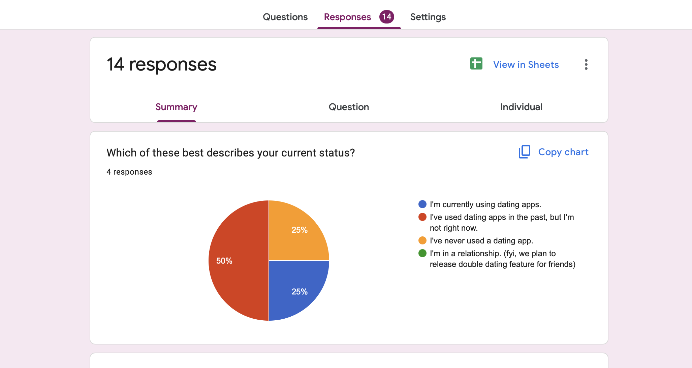
The summary started as raw notes from interviews and surveys and got condensed into recurring complaints, like chats that fizzle and profiles that feel too staged. When onboarding and scope questions came up later, we reopened this sheet instead of re-arguing from memory.
Figure A2 shows the competitive comparison we used while deciding what to prioritize against other dating apps.
Figure A2. Competitive analysis across dating apps for the capstone.
| Aspect | Hinge | Coffee Meets Bagel | Serene (our direction) |
|---|---|---|---|
| Profile style | Prompt-led profiles and polished UI; still leans on quick appearance-based judgment. | Curated profiles framed around quality over quantity. | Polaroid-style capture aimed at a more immediate, less polished profile feel. |
| Chat behavior | Chats often fade before people meet; messaging stays central. | Slower, more intentional messaging; fewer daily connections. | Lighter in-app chat; more emphasis on moving toward an IRL meet. |
| Real-life meeting focus | Strong relationship branding, but the loop still spends a lot of time in the app. | Geared toward serious dating and real-world intent. | Explicit focus on meeting in person and shortening the path from match to showing up. |
| Spontaneity | Feed-style browsing and steady swiping. | More scheduled feel with limited daily picks; can feel less spontaneous. | Location-based discovery when someone is nearby; more room for unplanned overlap on campus. |
| Pace | Can feel fast and endless. | Slower, more selective pacing. | Aims for a pace that favors getting to an actual meet rather than long back-and-forth. |
| College focus | General audience. | General audience. | Positioned around college-age users, mutuals, and campus context in our planning. |
| Overall direction | Prompts and matching tuned for relationships; chatting and profile polish stay central. | Intentional, slower matching toward serious relationships. | IRL-first dating with real profiles, nearby discovery, and friends or mutuals in scope—descriptive of what we aimed for, not proof it outperforms other apps. |
The comparison helped us decide which features to keep in scope and which ones not to focus on for the first build. Earlier we had a longer wish list; filling out the table forced us to rank what we could actually touch in one quarter.
MVP Scope and Product Decisions
The full idea had to be narrowed into an MVP for one quarter. Our goals included designing and prototyping the experience, building an iOS app, and eventually checking the idea with college-age users. We used a waitlist site at dubmatch.com for early signups. We created a user flow to decide which parts of the experience belonged in the MVP and which parts were left out. The main pieces we kept included profile setup (Polaroid photo plus basics), discovery, matching, and a first in-person meet with safety-related steps. We focused on the parts needed to show the main idea and dropped deeper features, like long in-app chat, that we could not finish in time.
Figure B1 shows the MVP requirements list after we trimmed the original plan to what we could build in one quarter.
Figure B1. MVP requirements for discovery, matching, Polaroid onboarding, and safety.
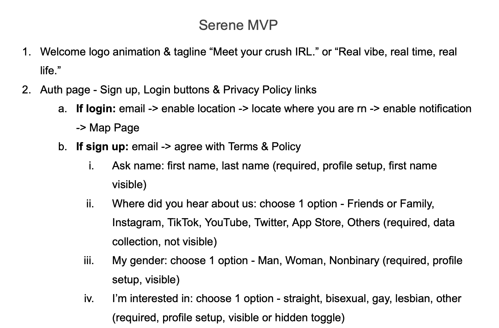
Early drafts still listed heavier chat flows; later passes crossed those out and spelled out the meet path, the 30-minute window, and QR check-in so the written plan matched what we agreed to code.
Figure B2 shows the user flow we used to decide how the MVP would be structured.
Figure B2. User flow from sign-up through first IRL meet.
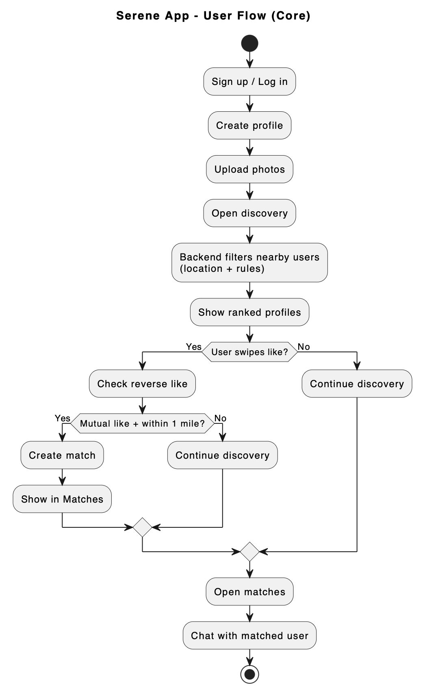
The first sketch skipped some permission beats; we redrew the map once the backend needed exact steps for location alerts and meet state. That revision is what Andriy matched to endpoints and safety checks.
UI/UX Design in Figma (Justin)
Justin worked in Figma from early wireframes and rough flows through later, clearer screens. The first passes had too many steps. Over time we reduced the number of screens, cleaned up onboarding so it was easier to follow, and moved toward a simpler black-and-white layout.
Figure C1 compares early UI ideas with the later Figma screens.
Figure C1. Early wireframes compared to refined final screens.
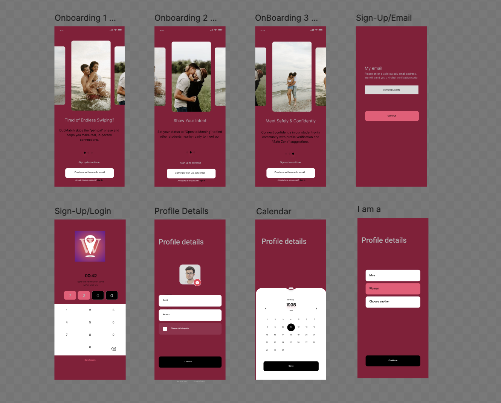
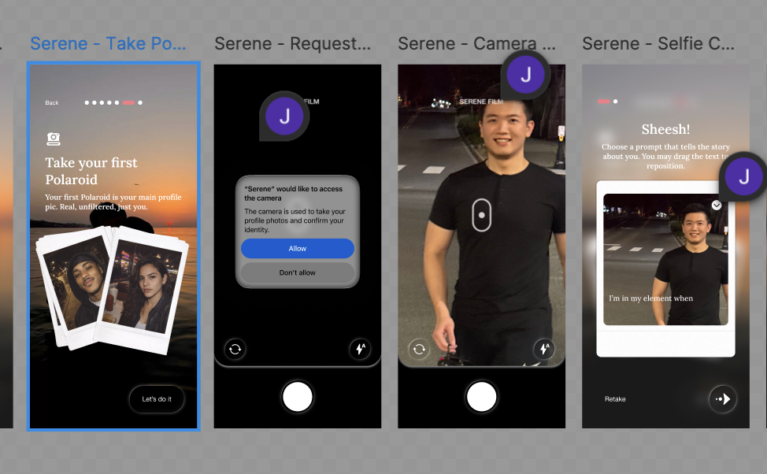
The earlier screens spent more time explaining the process, while the later version reduced the number of steps and made the onboarding flow shorter. Side-by-side, you can see which screens we cut and which ones stayed.
Figure C2 shows three onboarding screens in order: location permission, notifications, and the Polaroid capture step.
Figure C2. Onboarding flow: location, notifications, and Polaroid capture.
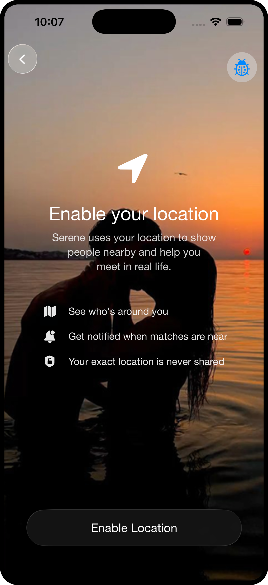
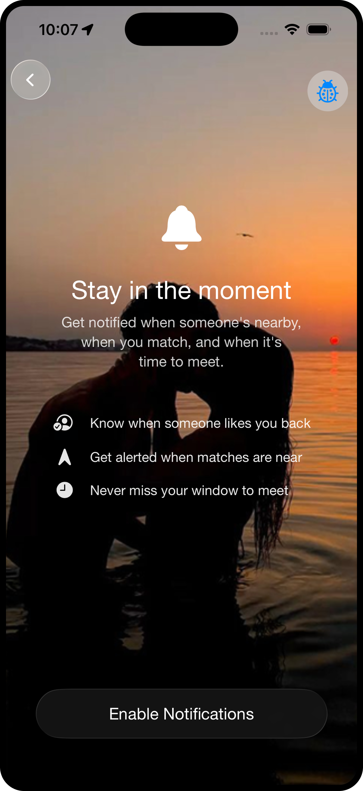
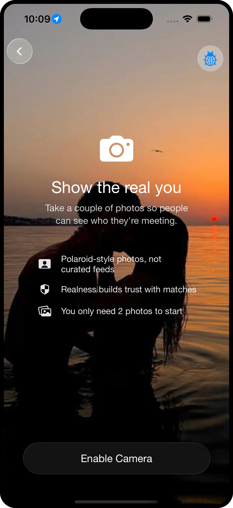
This flow changed over time as we tried to make the permission steps easier to understand and to show where the Polaroid capture landed. The SwiftUI build tracked the revised order with only small tweaks.
iOS Frontend Implementation (SwiftUI) (Justin)
Justin translated the Figma flows into SwiftUI screens. The work included navigation between sections, state handling, reusable components, MapKit for maps, and wiring views to the backend API as endpoints became available. We followed Apple’s UI guidance where it helped, including liquid glass in places that did not hurt readability.
Figure D1 shows SwiftUI code that reflects how we organized the frontend structure.
Figure D1. SwiftUI code structure for navigation and state.
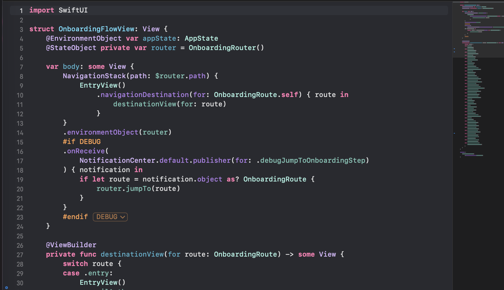
We first grouped screens loosely, then split meet-related state when the API started returning pending, confirmed, and expired outcomes. That refactor is visible in how navigation and state are separated in the diagram.
Figure D2 shows the map screen tied to discovery and meeting directions as the frontend came together.
Figure D2. Apple Maps integration for discovery and meet guidance.
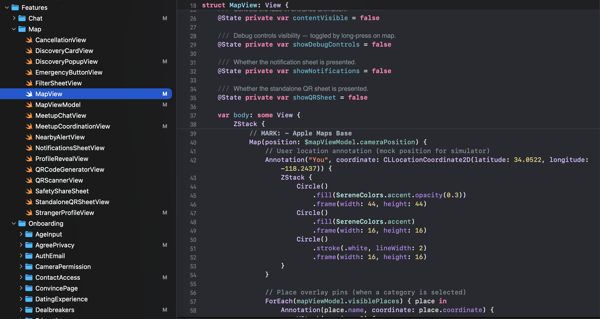
An early prototype asked the client to hold more precise location detail than we wanted to keep on device. After syncing with the backend, we dialed back what the map showed while still supporting the meet step with directions.
Backend Architecture and Data (Flask + Supabase) (Andriy)
Andriy built the Flask API and the Supabase-backed data model. The backend covered authentication, profiles, matches, and data for meetings and safety-related fields. The team shared draft request and response shapes so the iOS side could match the same structure.
Figure E1 shows the API layout after we iterated on which routes the iOS app needed.
Figure E1. Backend API architecture (Flask, Supabase, client).
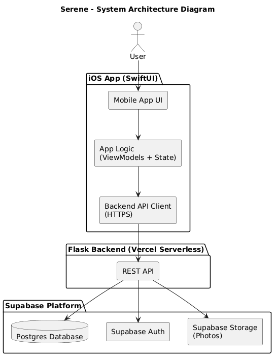
The first sketch only listed discovery and match paths. Safety and meet lifecycle endpoints were penciled in later, and the diagram was redrawn each time the contract with the client changed.
Figure E2 shows the database structure used to support profiles, matches, and meetings.
Figure E2. Database schema for users, profiles, matches, and meeting/safety.
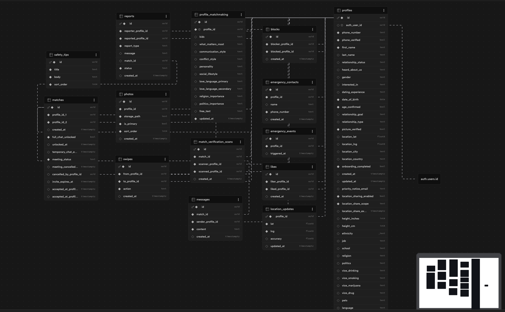
Early drafts omitted explicit fields for meet expiry and check-in status. We added those columns once the safety flow was clearer, and we kept migrations small so the schema did not churn every week.
Figure E3 shows how we sketched a typical path from an app request through the backend to a response while we were aligning contracts with the iOS client.
Figure E3. Backend user journey from request flow to system response.
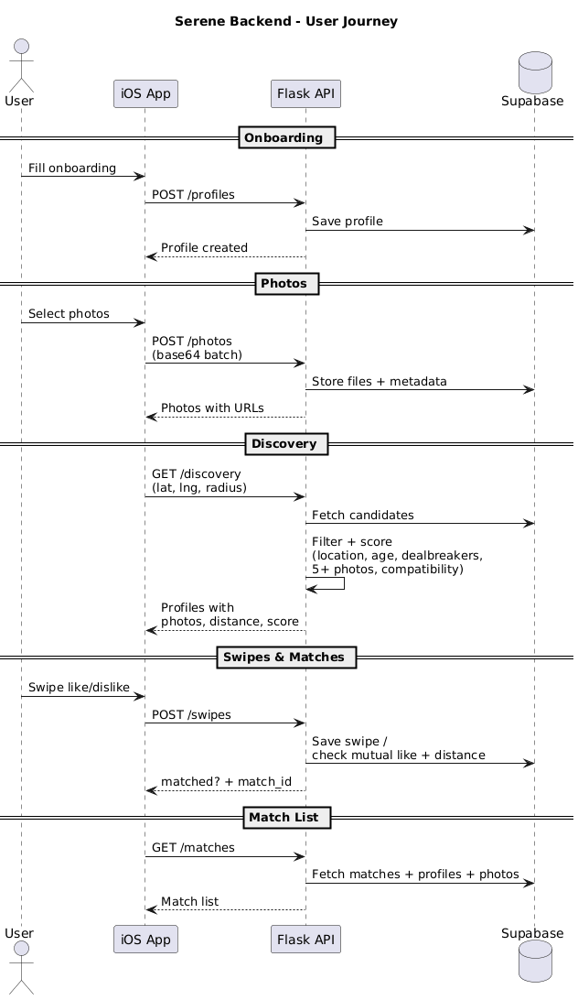
We drew this mid-quarter when we were deciding what the server should own versus what the app should handle before wiring endpoints. It became a reference during integration when meet and match states changed, and revisiting it helped catch a few mismatches between client expectations and the API shape we had documented.
Matchmaking, Proximity Engine, and Safety (Backend + Product)
This part of the project covered logic for nearby matching and the product rules we aligned on for real-life meets, including a 30-minute window, QR check-in, and expiration for pending meets. Andriy implemented proximity using Haversine distance plus match scoring with dealbreakers. Product and backend agreed on radius and how often the client should refresh location.
Figure F1 shows pseudocode we wrote while tuning discovery and mutual matching: bounding-box and Haversine distance, filters, compatibility scoring, and the swipe-to-match path including distance and invite timing.
Figure F1. Pseudocode: matchmaking and proximity engine, plus swipe to match.
Matchmaking + Proximity Engine
Input: user_id, lat, lng, radius_miles
- Query nearby profiles with a bounding-box filter.
-
Exclude:
- current user
- blocked users (both directions)
- already swiped users
- users with location sharing off/expired
- Compute exact distance with haversine.
-
Apply filters:
- age 18–27
- dealbreakers (age, distance, height, preferences)
- at least 5 photos
- Compute compatibility score per profile.
- Sort by compatibility_score (desc), distance_miles (asc).
- Return discovery profiles with photos, distance, compatibility_score.
Swipe to Match
Input: from_profile_id, to_profile_id, action
- Insert or update swipe record.
- If action != like: return matched = false.
- Check reverse like (to → from).
-
If reverse like exists:
- enforce distance <= 1.0 mile
- create match using ordered profile ids
- set invite_expires_at = now + 5 minutes
- return matched = true, match_id
- Otherwise return matched = false.
The radius and refresh numbers on the page are not the first values we tried. We adjusted them after walking through campus-scale distances and watching how noisy updates felt on the client.